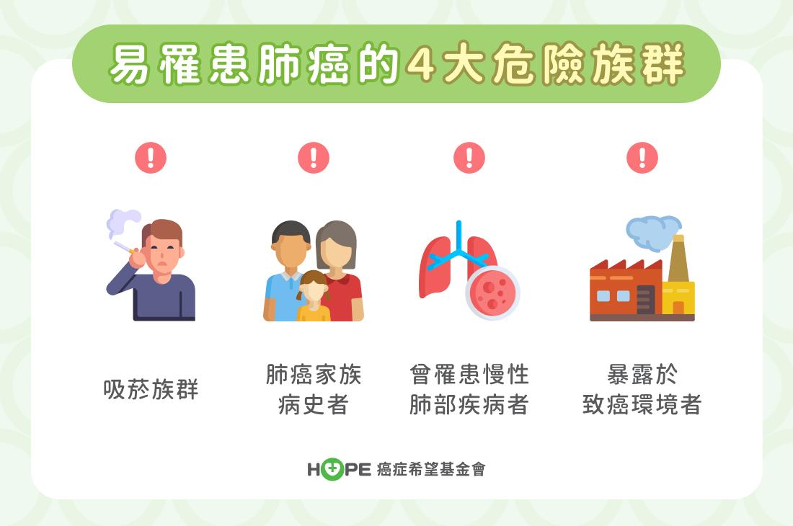
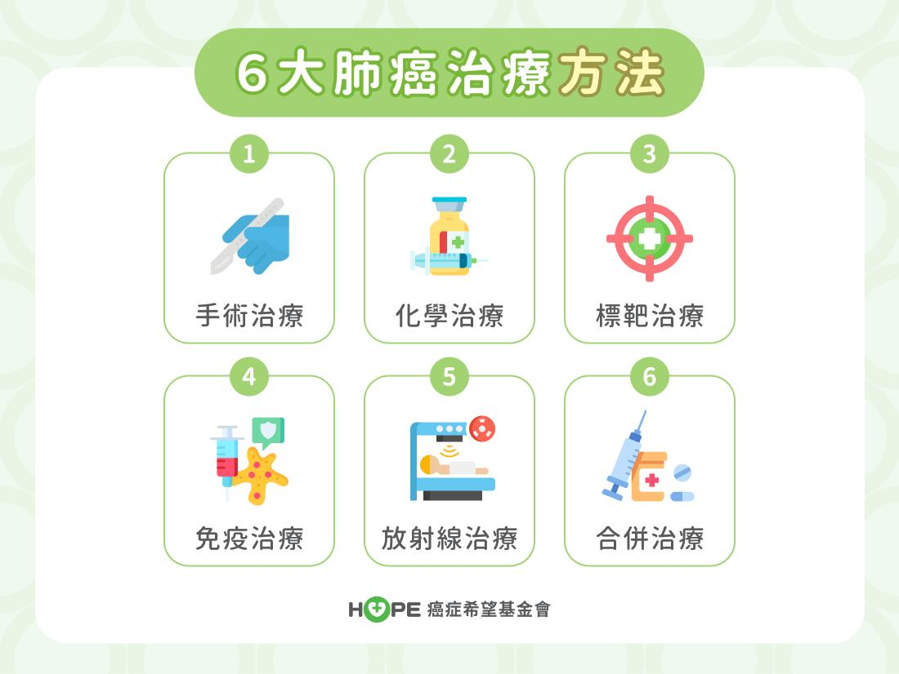
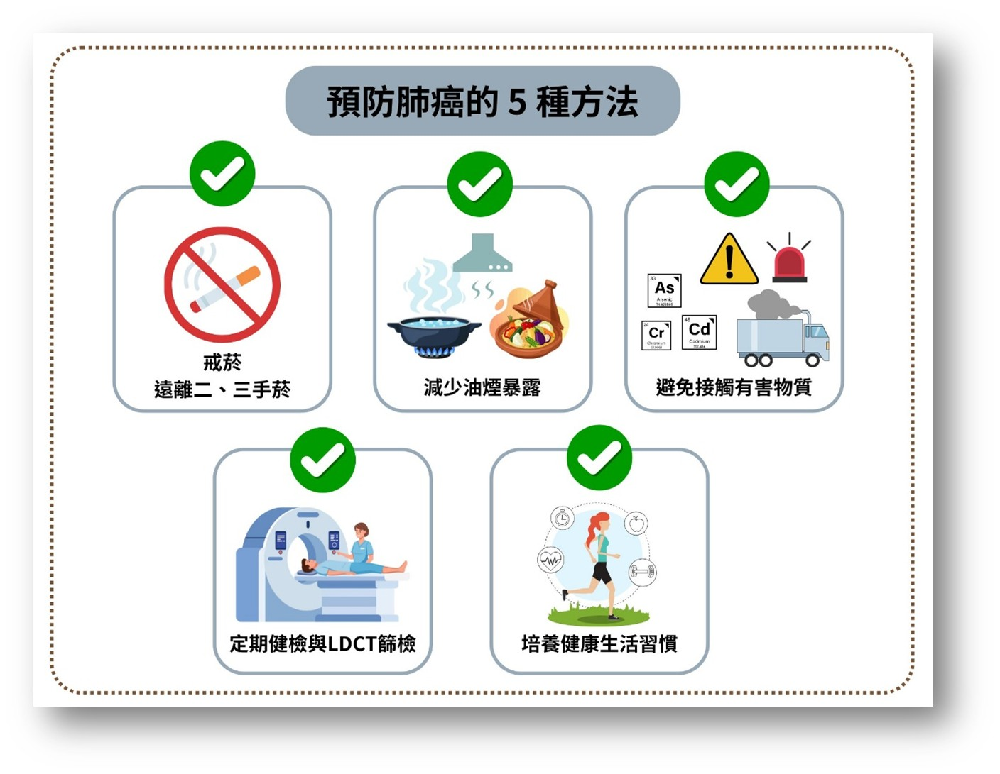

月號－健康大小事
月號－健康大小事|
肺癌是指生長於支氣管或肺泡的惡性腫瘤，長年位居台灣癌症死因首位。每年超過9,000人因肺癌離世，每年新增個案約13,000人，除了吸菸是最主要危險因子外，空氣污染、二手菸、油煙、石棉及家族病史等，也會增加罹患疾病風險。因此，了解肺癌的成因與早期徵兆，是守護健康、預防風險的第一步。 |
|
肺癌的種類 1. 小細胞肺癌（SCLC）：生長迅速、擴散快，約七成病人確診時已有轉移。 2. 非小細胞肺癌（NSCLC）：包含以下三類 (1)腺癌：最常見，約占七成，多見於女性及無吸菸者。 肺癌高風險族群 1. 吸菸或曾吸菸者：香菸內含80種致癌物，長期吸菸風險高出數倍。 |
|  |
|
肺癌常見症狀 肺癌早期症狀常不明顯，常見症狀如下： 1. 長期慢性咳嗽、咳血或痰中帶血。 |
|
肺癌診斷方法 1. 影像學檢查： (1)胸部X光檢查：為最基本的肺癌篩檢工具，可初步檢視肺部是否有異常陰影。 2. 細胞學與組織切片檢查：痰液細胞學檢查、支氣管鏡檢查、組織切片…等。 |
|
肺癌治療方法 1. 手術治療：適用於早期肺癌，將腫瘤及周圍組織切除，是最主要的治療方式之一。 |
|  |
|
預防肺癌的五種方法 1. 戒菸、遠離二手菸及三手菸 |
|  |
台北榮總張家銘醫師表示：「壓力、空汙、飲食與睡眠，都在默默影響細胞的修復力。給自己一點空白時間、多吃抗氧化蔬果、養成良好生活習慣，是守護細胞最溫柔的方式。」肺癌並非僅發生於吸菸者，早期發現才是防癌的關鍵，定期健檢、戒菸，都是愛自己、守護健康最實際的行動。 |
|
資料來源
1. 肺癌是什麼？2大種類、4大分期症狀、檢查與治療方法全解析 |